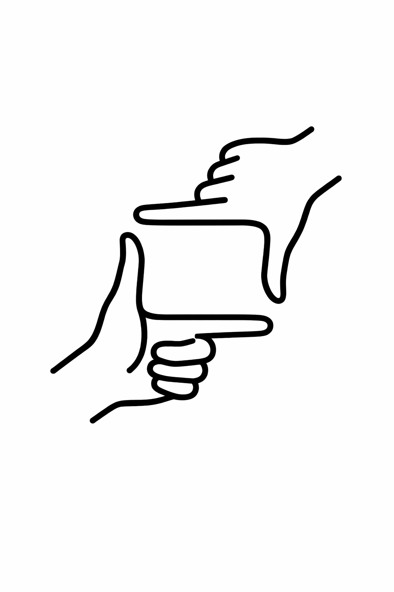
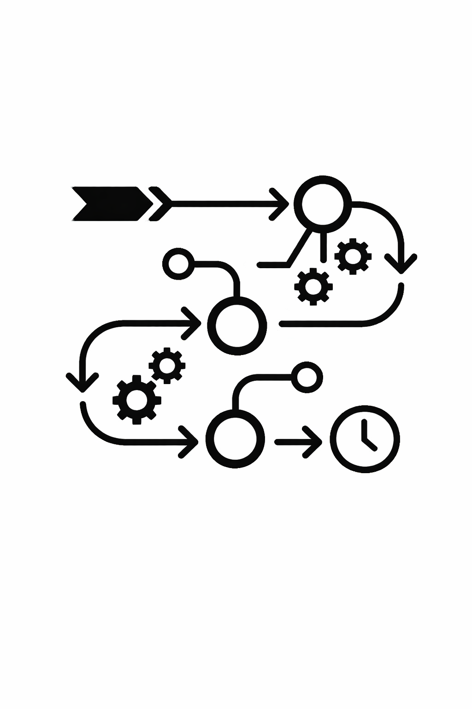
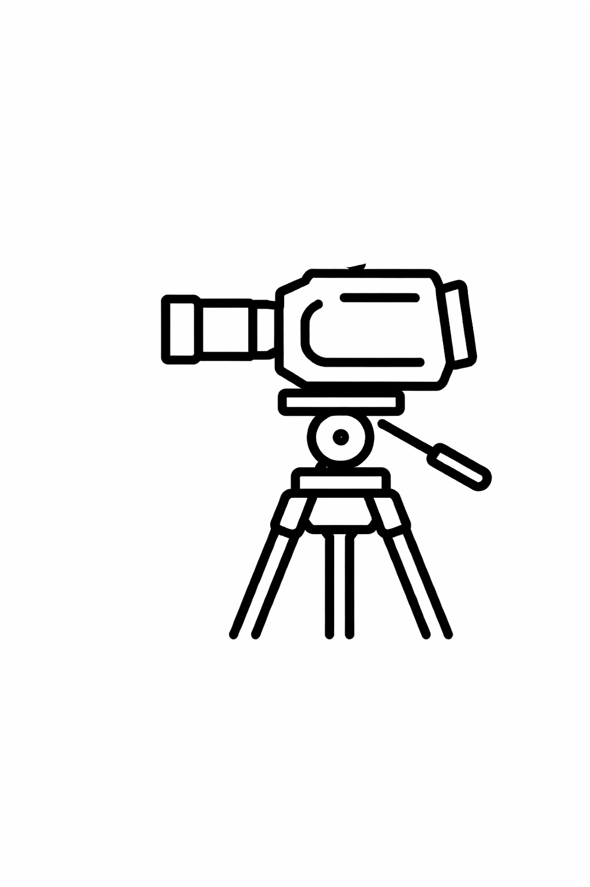
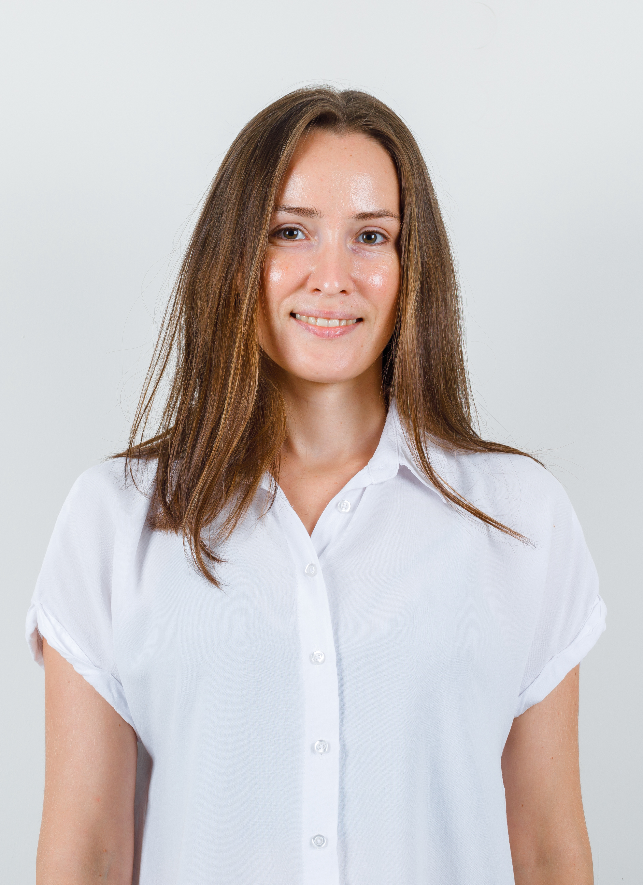

— The fucking Boss —
Especialista en la gestión integral de proyectos audiovisuales. Mi trabajo consiste en traducir conceptos creativos en realidades cinematográficas. Desde la concepción del guion y la dirección de arte en el set, hasta la supervisión técnica de la cámara y el montaje en postproducción. Aporto una visión global que garantiza no solo una estética de alto nivel, sino un flujo de producción eficiente, sólido y orientado al resultado.
Para lograr esta cohesión, mi trabajo se articula sobre tres pilares fundamentales:

Aquí es donde nace la visión visual y narrativa del proyecto. No se trata solo de imaginar, sino de diseñar el mapa que todo el equipo va a seguir.

La creatividad necesita estructura. Este es el rol que garantiza que la visión del director se pueda rodar dentro del tiempo y los recursos disponibles.

El rodaje es solo la recolección de los ingredientes; aquí es donde realmente se "cocina" la película y se le da el ritmo final.
Conceptualización visual, escritura de guiones técnicos y dirección de arte en set para garantizar una estética de alto nivel.
Diseño de presupuestos, órdenes de rodaje y coordinación logística para un flujo de producción eficiente y sólido.
Montaje narrativo, corrección de color (Color Grading) y diseño sonoro para cerrar la pieza con un ritmo impecable.
Desarrollo integral de proyectos de branded content con marcas líderes, desde la conceptualización hasta la producción y adaptación de contenidos audiovisuales estratégicos. Cada pieza está diseñada para generar impacto y engagement, optimizando la visibilidad y fortaleciendo el posicionamiento de Xuan Lan Yoga en múltiples formatos y canales.
Desarrollo de una pieza audiovisual sobre seguridad en Gmail, con adaptaciones a 45 y 20 segundos. Parte de la campaña “Más seguridad con Google”, centrada en la concienciación sobre phishing y protección de datos.
⯈ Contenido educativo con enfoque creativo para campañas digitales.
Producción de 4 vídeos de yoga y un tráiler para su programación a bordo, dentro de la campaña “Tu espacio de bienestar a bordo”. Diseño de grafismos y cortinillas adaptadas al branding, versiones en castellano e inglés y piezas promocionales.
⯈ Integración del bienestar como parte de la experiencia de vuelo.
Desarrollo de la campaña audiovisual para el libro Best seller “Mi Diario de Yoga” de Xuan Lan, transformando el contenido del libro en una experiencia digital completa. El proyecto incluyó la creación de 28 clases grabadas, un tráiler promocional y piezas para campañas digitales, con un enfoque estratégico orientado a la captación de usuarios, la mejora del posicionamiento de XLYStudio y la activación de ventas del libro.

⯈ Proyecto clave para transformar un best seller en un producto digital escalable, con impacto directo en captación, conversión y crecimiento de la plataforma XLYStudio
USUARIOS INSCRITOS: 14.061 | LEADS GENERADOS: 6.508 | RATIO DE CONVERSIÓN: 4,08% (428 u.)